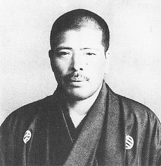

Toku was born in Kagoshima Prefecture, Japan in 1887. He started training in Judo, karate and kendo at elementary school, becoming a frequent tournament winner; in one of his first showings, he defeated 165 opponents in a single judo league. It was said he refused to learn ukemiwaza, the saying he would never be thrown.
After being scouted by Kaichiro Samura, he moved to Tokyo and joined the Kodokan school in May 1906. He soon became known there for his harsh training regime, which gained him the nickname of & " Nonaka no Ipponsugi; (野中の一本杉, "The Lone Cypress in the Field;) and the reputation of being the strongest judoka of his time. He was one of the school's biggest names along with future 10th dan Shotaro Tabata and Kyuzo Mifune, the latter prompting a public rivalry in which they were known as "Waza no Mifune" (技の三船, "Mifune of the Technique") and "Oni no Toku" (鬼の徳, "Toku of the Devilness"). oku famously challenged karate master and Shotokan founder Gichin Funakoshi to a match, without ever receiving an answer. Toku himself did, however, answer a challenge from 15 sailors of the Brazilian Navy to the Kodokan in 1912, defeating them all soundly and injuring several. This would temporarily end Toku's career at the Kodokan, as the Brazilian embassy lodged a formal complaint that forced Jigoro Kano to expel Toku from the school. Kano still offered to maintain him economically, though Toku refused, choosing to become a wandering martial arts teacher instead.[[](https://en.wikipedia.org/wiki/Sanpo_Toku#cite_note-Ichi-3)